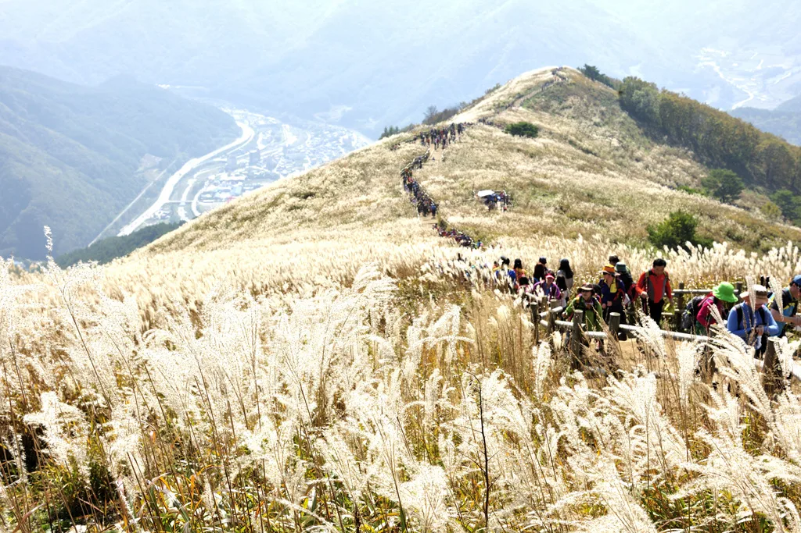
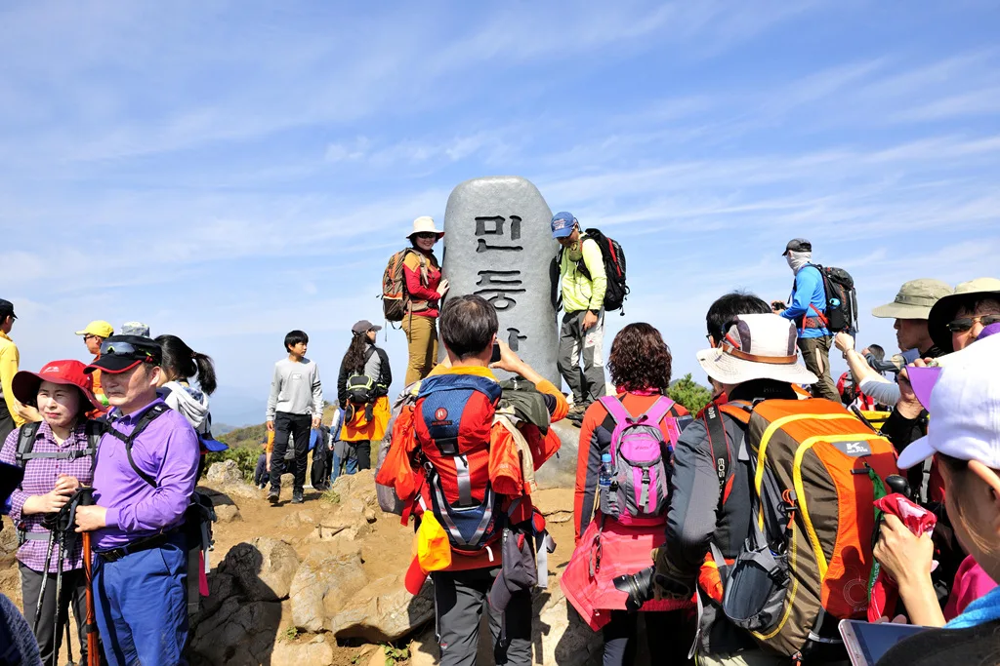
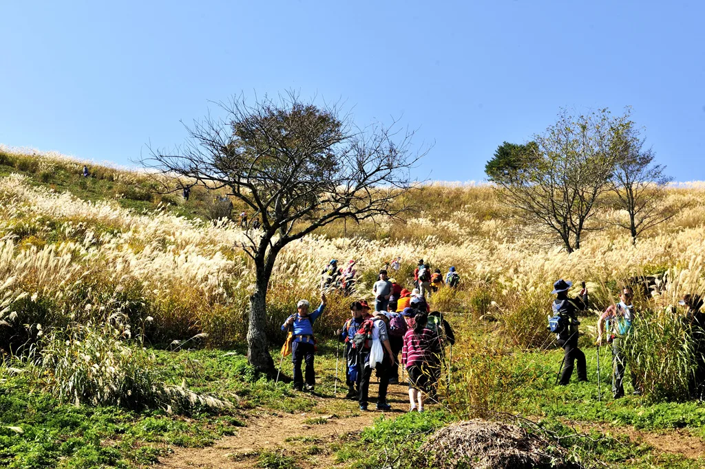
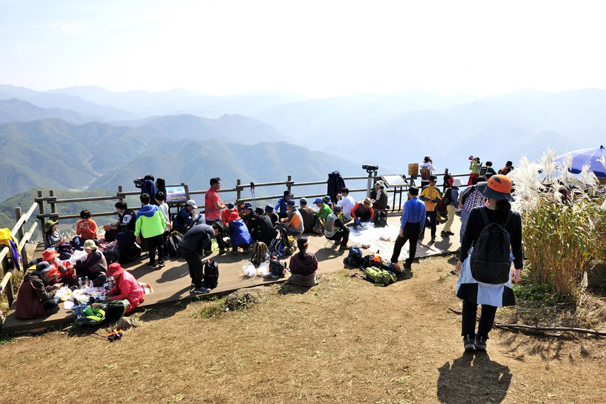
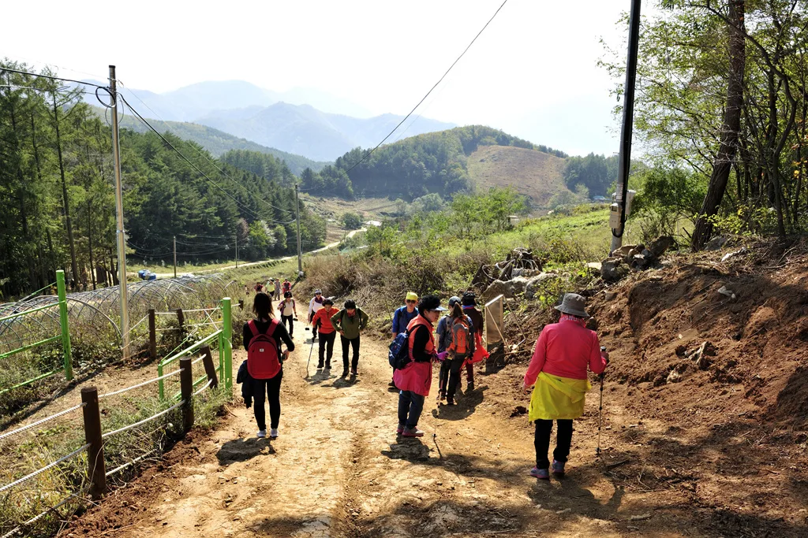
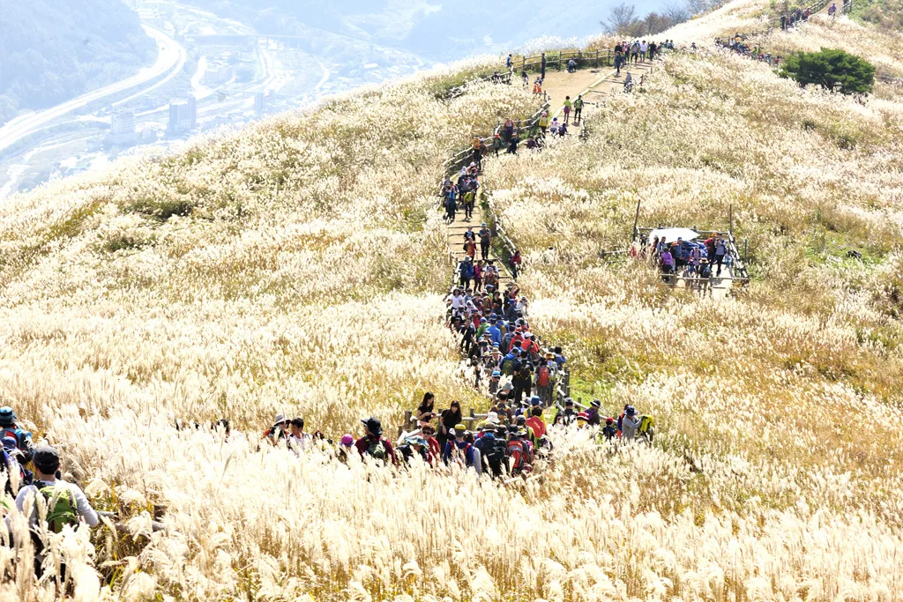
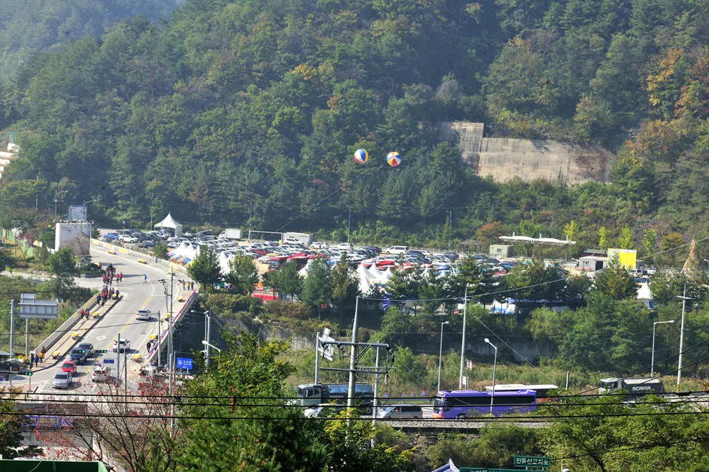
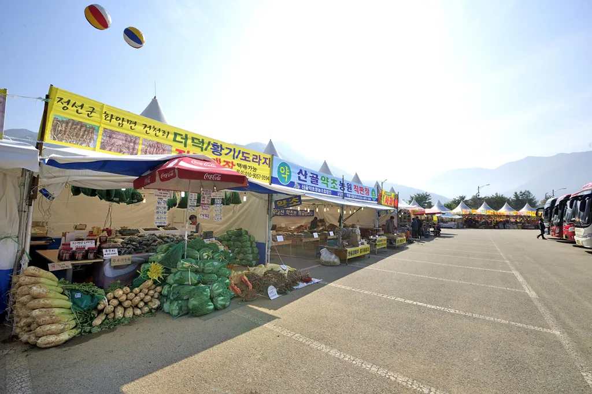
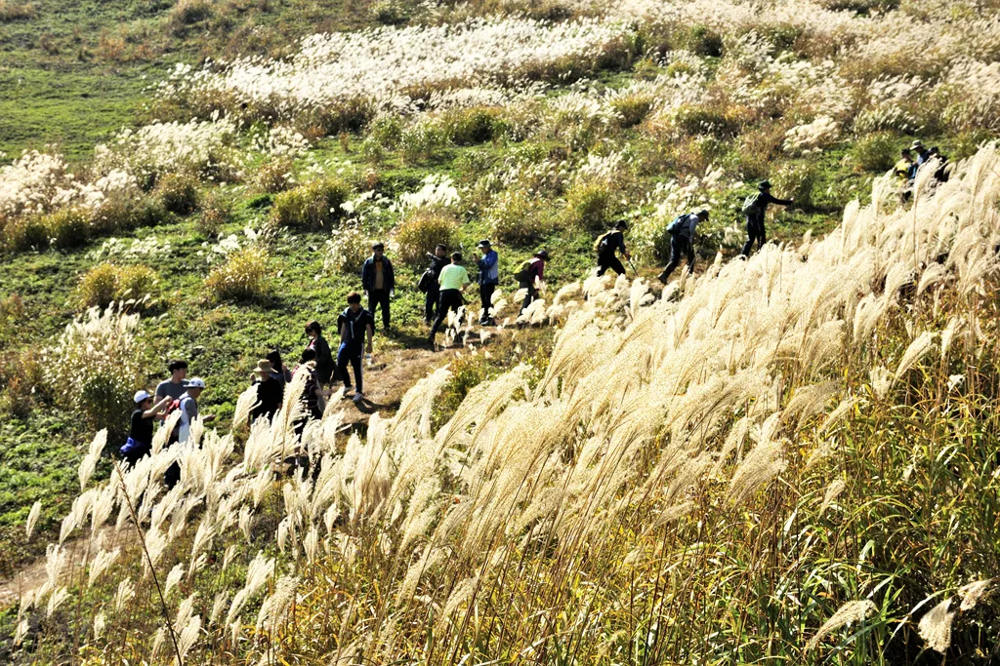

▲ 은빛 물결로 뒤덮인 민둥산 정상 능선. 어느 코스로 오르느냐에 따라 등산 시간이 최대 3배 가까이 벌어진다 ⓒ 정선군청
정선 민둥산(해발 1,119m)은 정상부 20만 평 능선 전체가 억새로 뒤덮이는 전국 최대급 억새 군락지다. 매년 9월 하순부터 11월 초순까지 억새가 피고 지는데, 절정은 보통 10월 중순으로 꼽힌다. 문제는 여기서부터다. 민둥산에는 들머리가 둘이다. 하나는 왕복 3시간대의 정석 코스, 다른 하나는 1시간이면 끝나는 지름길이다. 어느 쪽을 고르느냐에 따라 하루 일정의 시간표와 지갑 사정이 완전히 달라진다. 이 기사는 두 코스를 '분 단위 시간'과 '원 단위 비용'으로 쪼갠 예산표로 정리했다.
1. 억새 절정 시기와 축제 기간

▲ 해발 1,119m 민둥산 정상 표지석. 등산객들이 줄을 서서 인증샷을 남긴다 ⓒ 정선군청
민둥산 억새축제는 매년 9월 하순 개막해 11월 초순까지 이어진다. 이 기간 억새는 갈색 이삭에서 은빛 솜털로 서서히 옷을 갈아입는데, 가장 풍성하고 하얗게 피어나는 시점은 10월 중순이다. 10월 말~11월 초는 억새가 바람에 날려 이미 성긴 상태로 접어드는 경우가 많아, '은빛 물결'을 제대로 보려면 축제 후반보다는 중반에 맞춰 일정을 잡는 편이 유리하다. 주말에는 등산로가 여러 겹 사람으로 채워질 정도로 붐비므로, 시간·비용 예산을 넉넉히 잡아두는 게 낫다.
2. 증산초교 코스 예산표 — 왕복 3시간대, 돈은 거의 안 든다

▲ 증산초교 코스 초입. 숲 그늘을 지나면 곧바로 억새 사면이 펼쳐진다 ⓒ 정선군청
민둥산역과 증산초등학교 앞에 무료 주차장(제2공영주차장 포함)이 있다. 여기서 오르는 코스가 가장 널리 알려진 정석 코스다. 상행은 급경사 숲길 약 2.0km, 하행으로 주로 쓰는 길은 경사가 완만한 대신 약 3.3km로 늘어난다. 왕복 총 거리는 약 5.3~5.5km, 순수 도보 시간만 3시간 안팎이다. 정상 부근 매점에서는 막걸리와 전을 판다.
| 구간 | 거리 | 소요 시간 | 비용 |
|---|---|---|---|
| 주차 → 들머리 이동 | - | 약 5분 | 주차 0원 (무료) |
| 상행(급경사 숲길) | 약 2.0km | 약 90분 | 0원 |
| 정상 체류·사진·매점 | - | 약 20분 | 막걸리·전 등 선택 지출 1만~1만5천원 |
| 하행(완경사 능선길) | 약 3.3km | 약 100분 | 0원 |
| 합계 | 약 5.3km | 약 3시간35분 | 0~1만5천원 |
이 코스의 강점은 명확하다. 주차부터 매점까지 사실상 '무료 산행'이 가능하다는 것. 대신 왕복 3시간반은 각오해야 한다. 평일 반나절 일정이라면 여유 있게 소화되지만, 당일치기로 다른 정선 관광지까지 엮으려 한다면 시간이 빠듯해진다.

▲ 정상 전망데크에서 휴식을 취하는 등산객들. 예산표의 '정상 체류 20분'이 실제로는 이렇게 붐빈다 ⓒ 정선군청
3. 발구덕 코스 예산표 — 1시간 컷이지만, 주말엔 셔틀이 강제된다

▲ 발구덕마을 방면 진입로. 평일에는 자가용 진입이 가능하지만 축제 기간 주말에는 통제된다 ⓒ 정선군청
발구덕마을 간이휴게소까지 차로 붙이면 정상까지 도보 거리가 1.0~1.3km로 확 줄어든다. 순수 도보 왕복이면 1시간 안팎, 정상 체류를 더해도 1시간30분이면 하산까지 끝난다. 문제는 접근 방식이다. 정선군은 6월부터 11월 8일까지 매주 주말 민둥산역~발구덕(평시), 축제 기간(9~11월)에는 민둥산운동장·능전마을~발구덕 2개 노선으로 셔틀버스를 운행한다. 주말·성수기에는 발구덕 방면 차량 진입이 제한되는 경우가 많아, 셔틀 이용이 사실상 강제되는 구조다.
셔틀버스 운행 소식 기사에서 확인 가능| 구분 | 평일(자차 진입) | 주말·성수기(셔틀 이용) |
|---|---|---|
| 주차 → 들머리 | 도보 약 2분, 발구덕 주차장 무료 | 임시주차 후 셔틀 대기·이동 약 20분 |
| 셔틀 요금 | 해당 없음 | 명목 1인 1만원 (지역화폐 5천원 환급, 실질 5천원) |
| 도보 왕복(1.0~1.3km, 정상 체류 포함) | 약 90분 | 약 90분 |
| 총 소요 시간 | 약 1시간30분 | 약 1시간50분 |
| 총 비용 | 0원 | 실질 5천원(명목 1만원) |
즉 발구덕 코스는 평일에는 '공짜로 1시간30분', 주말에는 '5천원에 1시간50분'짜리 산행이 되는 셈이다. 어느 쪽이든 증산초교 코스보다 절반 이하 시간에 정상을 밟을 수 있지만, 주말 방문객이라면 셔틀 운행 시간표를 미리 확인해야 헛걸음을 피할 수 있다.
4. 두 코스 정면 비교 — 시간을 살까, 체력을 살까

▲ 능선 데크길을 가득 메운 등산객 행렬. 증산초교 코스는 경치가 길게 이어지는 대신 시간이 오래 걸린다 ⓒ 정선군청
두 코스를 한 표에 놓고 보면 선택 기준이 뚜렷해진다. 시간이 넉넉하고 능선 경치를 길게 즐기고 싶다면 증산초교 코스, 시간이 촉박하거나 체력에 자신이 없는 동행이 있다면 발구덕 코스다.
| 구분 | 왕복 거리 | 총 소요 시간 | 총 비용 | 체감 난이도 |
|---|---|---|---|---|
| 증산초교 코스 | 약 5.3km | 약 3시간35분 | 0~1만5천원 | 중(급경사 구간 有) |
| 발구덕 코스 · 평일 | 약 2.0~2.6km | 약 1시간30분 | 0원 | 하 |
| 발구덕 코스 · 주말(셔틀) | 약 2.0~2.6km | 약 1시간50분 | 실질 5천원 | 하 |
참고로 발구덕에서 정상까지 오른 뒤 증산초교 방면으로 내려가는 종주 코스도 가능하다. 다만 이 경우 발구덕에 세워둔 차를 회수하려면 셔틀이나 택시로 되돌아와야 해, 시간·비용 예산이 두 코스 합산에 가깝게 늘어난다는 점을 감안해야 한다.
5. 주차장·화장실·매점 — 현장 편의시설 총정리

▲ 축제 기간 만차로 들어찬 임시주차장. 도로변까지 차량이 늘어서는 경우가 많다 ⓒ 정선군청
증산초교 코스는 증산초등학교 앞 주차장과 도로 건너 제2공영주차장을 함께 쓸 수 있고 둘 다 무료다. 등산안내소에 화장실이 갖춰져 있다. 발구덕 코스는 발구덕마을 주차장(정선군 남면 억새꽃길 252-3)에 화장실이 있다. 다만 두 곳 모두 축제 기간 주말에는 이미지처럼 만차가 흔하다. 임시주차장 위치와 면수는 매년 현장 상황에 맞춰 조정되는 편이라, 방문 전날 정선군청 관광포털 공지를 확인하는 것이 안전하다.
정선군청 관광포털에서 확인 가능
▲ 축제 기간 주차장 한편에 들어서는 특산물 장터. 더덕·황기·도라지 등 지역 농산물을 판다 ⓒ 정선군청
주차장 주변에는 축제 기간 한정으로 특산물 장터와 먹거리 천막이 들어선다. 하산 직후 간단히 요기하거나 선물용 농산물을 사기 좋은데, 이 지출은 앞선 예산표에는 포함하지 않았다. 별도 여윳돈으로 잡아두면 된다. 대형 관광버스도 다수 몰리므로, 승용차로 방문한다면 버스 전용 구획을 피해 이른 시간에 도착하는 편이 주차난을 줄이는 방법이다.
6. 차로 간다면 이것만은 확인하자

▲ 하산로에서 내려다본 억새 비탈. 능선 전체가 은빛으로 물든 모습을 볼 수 있는 것은 10월 중순 전후가 가장 좋다 ⓒ 정선군청
✅ 정선 민둥산, 차로 갈 때 체크리스트
· 억새 절정은 10월 중순, 축제 기간은 9월 하순~11월 초순
· 증산초교 코스는 왕복 약 5.3km·3시간35분, 비용은 사실상 0원
· 발구덕 코스는 왕복 약 2~2.6km·1시간30분~1시간50분
· 주말·성수기 발구덕 방면은 차량 진입이 제한될 수 있어 셔틀(실질 5천원) 이용이 사실상 필수
· 증산초교·발구덕 주차장 모두 무료지만 주말엔 만차가 흔하다
· 종주(발구덕→정상→증산초교)는 차량 회수 동선까지 감안해 시간·비용을 더 넉넉히 잡을 것
결국 민둥산 억새 산행의 진짜 변수는 '어느 코스로 오르느냐'가 아니라 '주말이냐 평일이냐'다. 평일에는 두 코스 모두 비용 부담이 거의 없지만, 주말 축제 기간에는 발구덕 방면 차량 통제와 셔틀 요금까지 예산에 넣어야 한다. 방문 전 정선군청 공지로 그 주 셔틀 운행 여부를 한 번 더 확인하고 떠나는 것을 권한다.